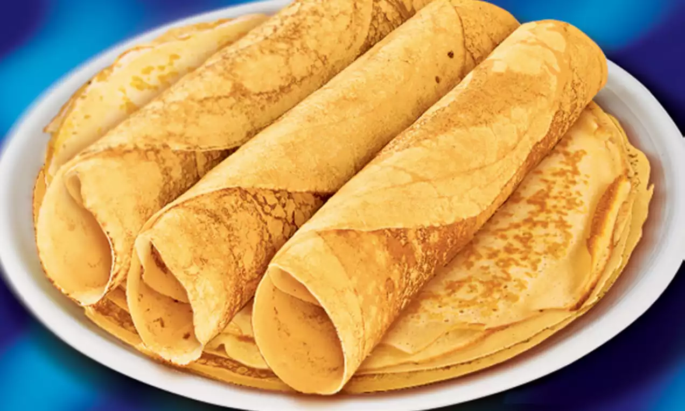

Beschrijving
Een pannekoek is een rond dessert, waarbij mensen veel suiker op strooit.

Ingrediënten
Voor 24 stuks.
- Bloem 500g
- Melk 10dl
- Eieren 4 of 5
- vanillesuiker 1 zakjes
- snuifjezout(Mag moet niet)
Instructies
- Zeef de bloem dan breek daarin de eieren.
- Giet de melk erbij en roer het heel goed tot dat alles vloeibaar is.
- Voeg dan de vanillesuiker en snuifjezout toe.
- Dan doe de een beetje olie in de pan en giet wat deeg in de pa.
- Wacht dan tot al het vloeibaar deeg niet meer te zien is.
- Als al het vloeibaar deeg weg is draai dan de pannekoek om.
- Als laatste moet je goet in dooghouden dat de pannekoek niet verbrand en als de pannekoek er goed uit ziet dan is hij klaar